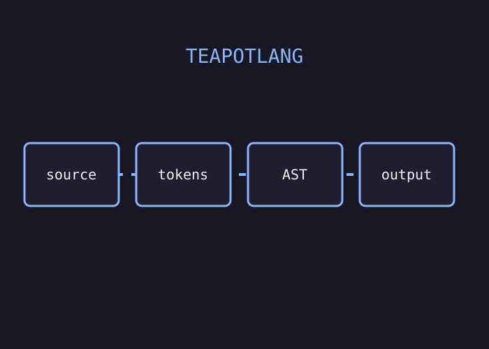

HOW I BUILT THIS
From source text to executable ideas
I designed TeapotLang from the lexer and parser upwards, keeping the intermediate representation understandable as the language evolved.
Challenge: make each compiler stage easy to inspect while the language was still changing.
Read the case study ↗